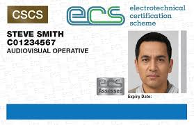

Get your ECS AV Operative / AV Technician Card and prove you are competent to install, test and maintain audio-visual systems safely on UK sites.

Example ECS AV Operative / AV Technician Card used to identify qualified AV technicians and audio-visual operatives across UK projects.
The ECS AV Operative / AV Technician Card confirms that you are trained and competent to work on audio-visual cabling, equipment and systems. Holding this AV ECS card makes it easier for employers, main contractors and site managers to verify your skills and health and safety awareness before allowing you onto a UK project.
Whether you are installing AV racks in offices, setting up meeting room systems, working on education or hospitality venues, or supporting events, the ECS AV Operative / AV Technician Card provides clear, recognised proof of your audio-visual competence and your understanding of safe working on live sites.
Typical processing time for an ECS AV Operative / AV Technician Card is around 15–20 working days after a complete application is received.
Our ECS AV Operative / AV Technician Card application support service fee is £79 (does not include official ECS or test provider fees).
To qualify for an ECS AV Operative / AV Technician Card you normally need a blend of practical AV experience, recognised training and a suitable health and safety record. Criteria can vary slightly depending on your route, but in general applicants should:
Preparing clear copies of your documents helps avoid delays to your ECS AV Operative / AV Technician Card application. You will normally be asked to provide:
The ECS AV Operative / AV Technician Card process checks both your technical experience and your understanding of safe working on UK sites. A typical AV ECS card journey looks like this:
Holding an ECS AV Operative / AV Technician Card can support your audio-visual career and help you access more opportunities across the UK. Some of the main benefits include:
The ECS AV Operative / AV Technician Card is widely recognised by AV contractors, main contractors and clients as evidence of competence in audio-visual work.
Shows that you specialise in AV systems, including signal paths, terminations, racks, displays and control equipment.
Demonstrates that you understand UK health, safety and environmental expectations for audio-visual and construction projects.
An AV ECS card can help you secure longer-term roles, move into more advanced technician positions and build trust with new clients.
Once a complete ECS AV Operative / AV Technician Card application is received with all of the required documents, processing generally takes around 15–20 working days. If anything is missing or needs clarification, this can add extra time before the AV ECS card is printed and dispatched to you.
For most routes to an ECS AV Operative / AV Technician Card you will need a valid ECS Health, Safety and Environmental Assessment result. This test checks that you understand safe working practices, site rules and your responsibilities on UK audio-visual and construction projects.
An ECS AV Operative / AV Technician Card is specifically designed for people working on audio-visual systems, including cabling, terminations and equipment installation. Many UK construction and refurbishment sites accept this AV ECS card as proof of competence, but you should always check individual project and employer requirements.
You can normally start the renewal process for your ECS AV Operative / AV Technician Card several months before the expiry date shown on the card. You will be asked to confirm your current details, provide any updated AV experience or qualification information, and ensure that your ECS Health, Safety and Environmental Assessment is valid where required. Renewing on time helps you avoid gaps in your AV ECS status.